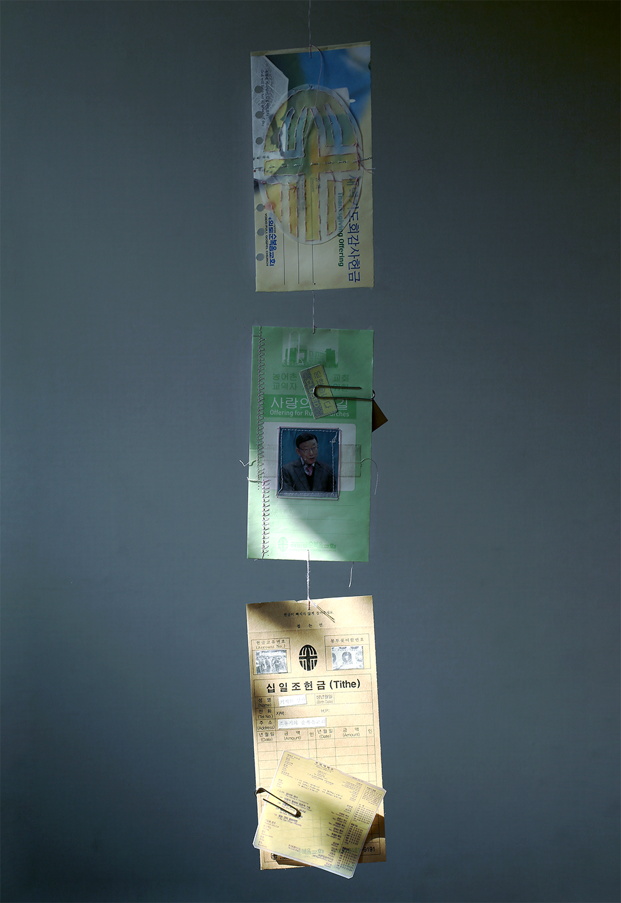
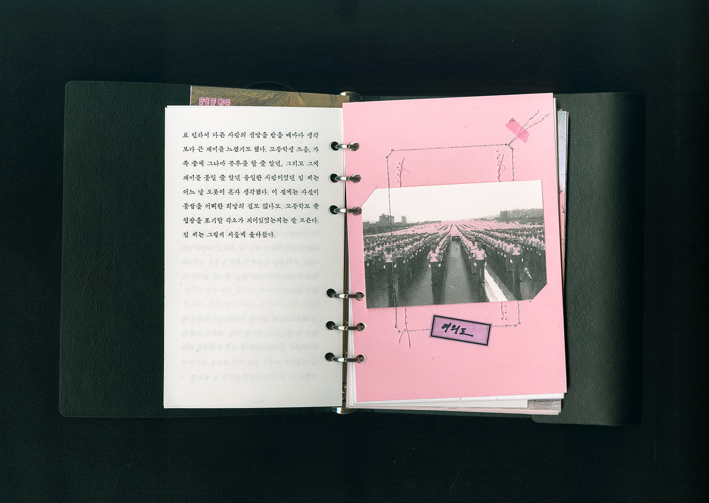
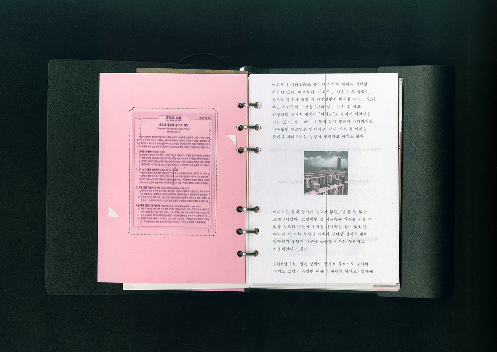
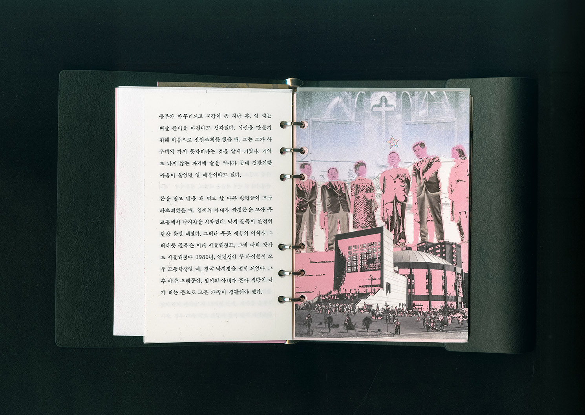
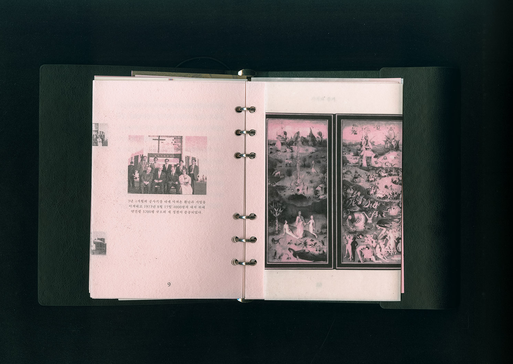
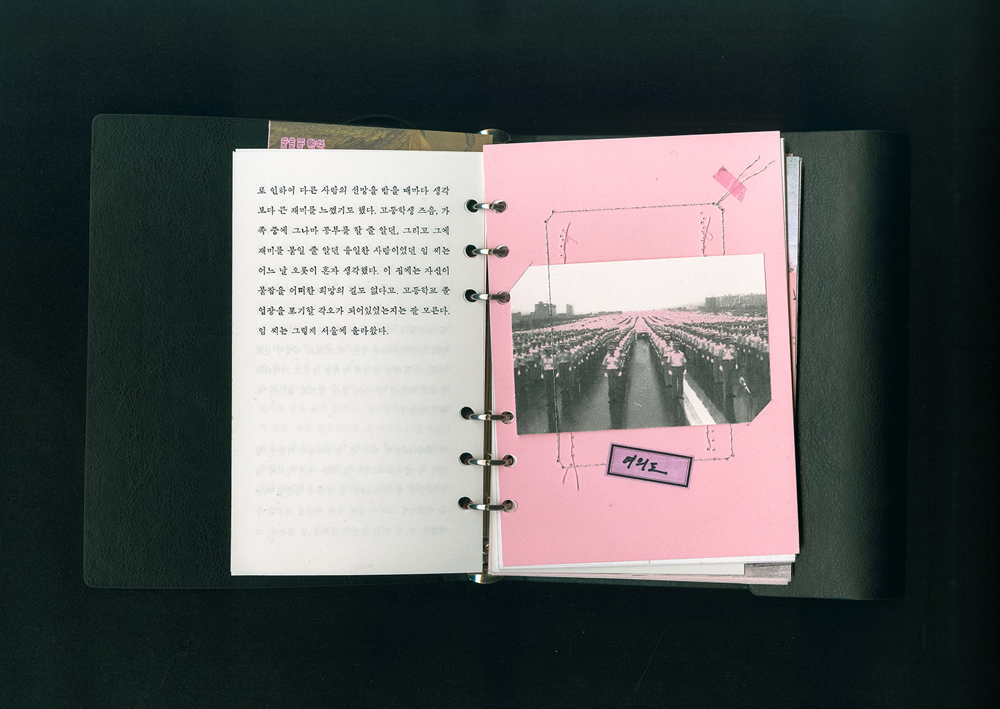
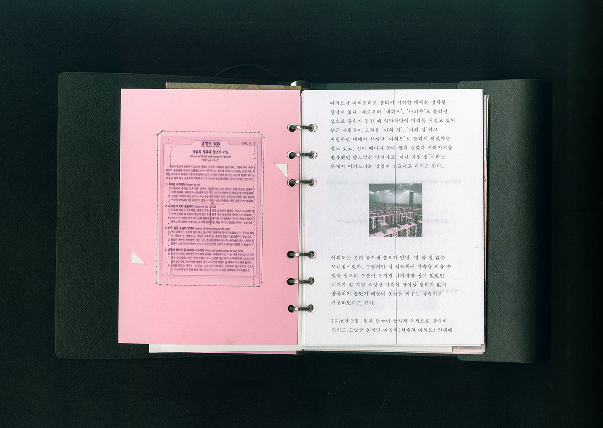
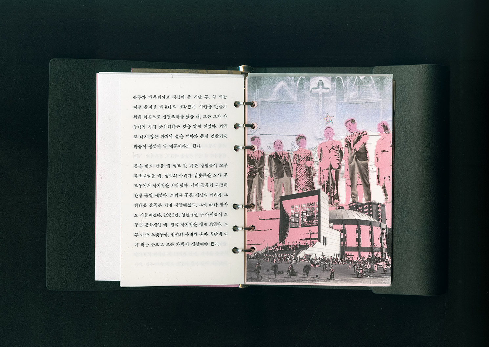
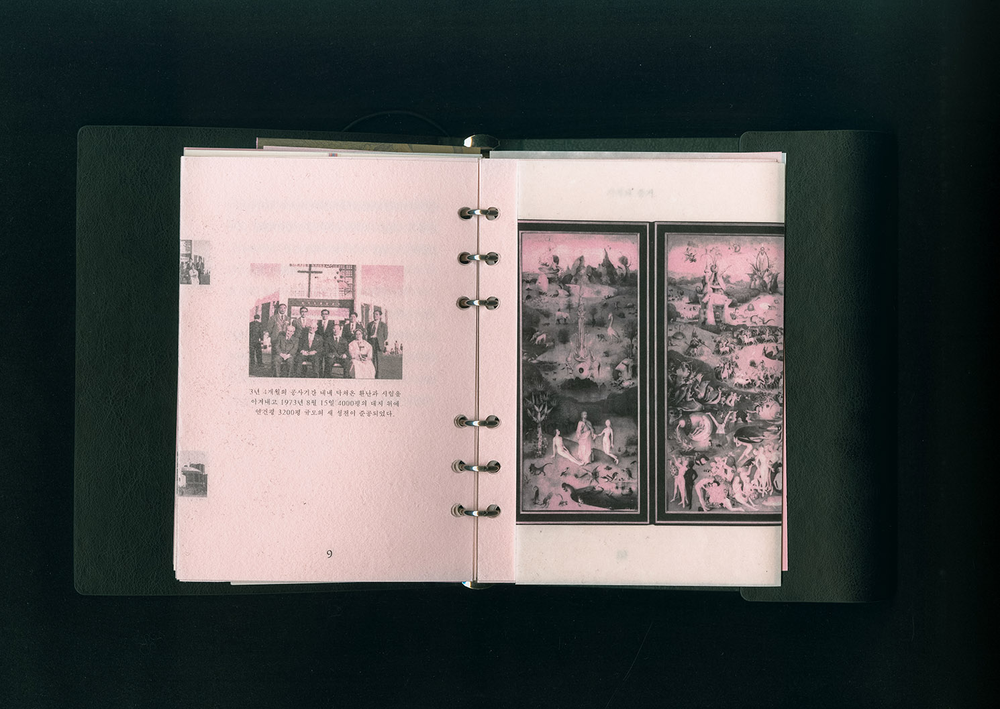

Dabin Kim 多彬 - Typography ↔ Print + Digital --- Dabin Kim 多彬 - Typography ↔ Print + Digital --- Dabin Kim 多彬 - Typography ↔ Print + Digital --- Dabin Kim 多彬 - Typography ↔ Print + Digital ---
(Dabin Kim) is - Typography Apprentice. Have great interest in discovering patterns beneath the surface of human features and society through urban space. Tries to expand the boundary of visual language, work in and out between digital surface and tangible surface. Currently based in Seoul, Korea.
Contact → dabinkiim@gmail.com • instagram • Photo • To visit my other Web → github
I value small practices. To check more, Typography _ Coding _
( Archive ) Index → (2021) Typegajok Project (11-12) ••• (2020) Counting Sheep(Web) (10), Widow-workshop (8-9), AsiaGoogleTypography (7), Scratch(Web) (6), Ci·ti·men·tal (4-5) ••• (2019) Yeoui-do Project (3), Squatting Practice (1-2)

Yeoui-do Project, 2019, Book and mobile installation
Space is physical and material, but it is more than that.
There are always desires, aspirations, and unconsciousness lurking in space, and they work nonstop. Yeoui-do Project focused on analyzing the artificial island and more of the Yeouido Full Gospel Church, where my grandfather was a pastor of - utill he died. The political and social context of Yeoui-do and the church was interpreted - based on the sentence “Everything is Political.” which is the main theme of the book «Architecture Melancholia».


Story
There was three timeline of political stream,
A. Yeouido, a artificial island developed through 1960s called ‘Korea Modernity’.
B. A church of martyr Cho Young-ki’s pure gospel, fed and bred by success of on material compensation belief based on Anti-Communism.
C. A history of individuals (my grandfather) who emigrated to the city after the Korean War.
Each story was connected to one story by listing them in a unitary material space. The story of my grandfather, who I think is the longest and most personal, was divided into three chapters based on migration and unemployment, which led to a change in the direction of life. Afterwards, it was constructed to arrange the stories of Yeouido and Yeouido Full Gospel Church in order, which have organic connectivity between the points of change and the chapters.
Book

Yeoui-do Project, 2019, Book and mobile installation
Space is physical and material, but it is more than that.
There are always desires, aspirations, and unconsciousness lurking in space, and they work nonstop. Yeoui-do Project focused on analyzing the artificial island and more of the Yeouido Full Gospel Church, where my grandfather was a pastor of - utill he died. The political and social context of Yeoui-do and the church was interpreted - based on the sentence “Everything is Political.” which is the main theme of the book «Architecture Melancholia».
Story
There was three timeline of political stream,
A. Yeouido, a artificial island developed through 1960s called ‘Korea Modernity’.
B. A church of martyr Cho Young-ki’s pure gospel, fed and bred by success of on material compensation belief based on Anti-Communism.
C. A history of individuals (my grandfather) who emigrated to the city after the Korean War.
Each story was connected to one story by listing them in a unitary material space. The story of my grandfather, who I think is the longest and most personal, was divided into three chapters based on migration and unemployment, which led to a change in the direction of life. Afterwards, it was constructed to arrange the stories of Yeouido and Yeouido Full Gospel Church in order, which have organic connectivity between the points of change and the chapters.
Book
